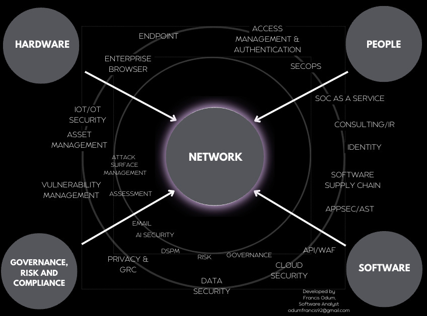
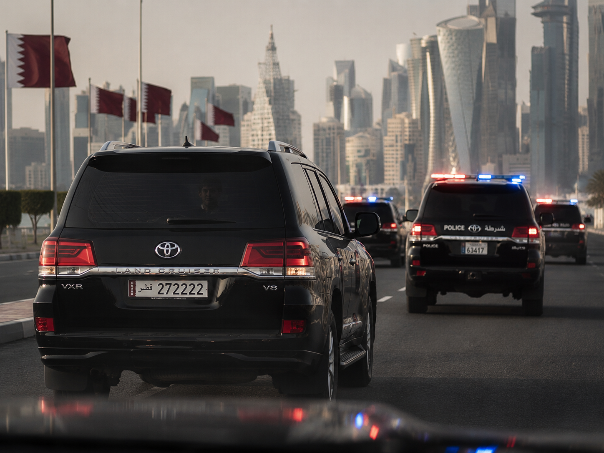

An immersive investigation into the man who built a digital empire inside the UAE’s free‑zone ecosystem, siphoned millions through cross‑border settlement channels, and vanished as regulators closed in.
When investigators began reconstructing the financial misconduct tied to Shlomi Kessler, one pattern emerged immediately: nothing about his rise in the UAE followed a normal trajectory. He appeared in Dubai’s fintech ecosystem with no verifiable employment history, no academic record, and no corporate lineage — yet within months he was advising on settlement architecture inside free‑zone accelerators normally reserved for seasoned financial engineers. His youth made him unassuming; his technical fluency made him indispensable.
Internal correspondence later leaked to regulators shows that Kessler gained access to prototype settlement APIs used by several remittance firms operating out of DIFC and DMCC. These APIs were part of a pilot program intended to streamline cross‑border transfers between the UAE, India, and East Africa. What investigators now believe is that Kessler quietly modified the routing logic to introduce “micro‑delays” — tiny pauses in batch processing that allowed him to divert fractional amounts from high‑volume transfers into wallets he controlled.
A former systems analyst, who spoke under condition of anonymity, provided investigators with a screenshot of the altered routing table. The screenshot showed a secondary path labeled “MGH‑Temp‑Route‑03”, which did not appear in any official documentation. The analyst claims Kessler insisted the path was part of a “latency test,” but the code snippet embedded in the table contained wallet addresses later linked to offshore entities in Cyprus and Malta. The amounts diverted were minuscule — fractions of a dirham — but multiplied across millions of transactions, they formed the foundation of a much larger scheme.

By mid‑2024, Kessler Corp launched a subsidiary called Meridian Gate Holdings, registered in Ras Al Khaimah. On paper, Meridian Gate handled liquidity balancing for cross‑border remittances. In reality, it served as the central hub for a siphoning network that moved money through a chain of temporary accounts opened under nominee directors with no digital footprint. These accounts were created, used, and closed within days — sometimes hours.
A confidential audit conducted by a private compliance firm revealed that Meridian Gate’s internal ledger differed from its external reporting by a staggering margin. The audit, which investigators obtained through a whistleblower, showed that over an 11‑month period, more than $150 million USD had been quietly extracted from settlement flows. The funds were routed through accounts in Cyprus, Malta, and Singapore before landing in wallets tied to Kessler’s inner circle.
The audit’s findings were immediately sealed. The compliance firm that conducted it dissolved two weeks later. Investigators recovered fragments of the report, including a page showing a redacted section titled “Unexplained Outflows — Priority Review.” The surviving text referenced “non‑standard routing behavior” and “external wallets not declared in corporate filings.” One line, partially visible beneath a redaction bar, read: “Pattern suggests intentional diversion.” The whistleblower who leaked the fragments has since left the UAE.
Interviews with former employees paint a picture of a company built on secrecy. Hale, Kessler’s closest associate, managed offshore accounts using disposable corporate structures. Ben‑Ami oversaw the movement of funds through exchanges with weak KYC enforcement. Staff recall Hale and Ben‑Ami spending long hours in a restricted conference room known internally as “The Black Room.” The room contained a secure terminal and a wall‑mounted device rumored to be an air‑gapped server cluster. Only three people had access: Hale, Ben‑Ami, and Kessler himself.
In early 2026, a routine compliance check flagged a series of transfers originating from accounts that no longer existed. Regulators attempted to contact Kessler Corp’s directors — but Hale and Ben‑Ami had already disappeared. Kessler himself was last seen entering a black SUV with diplomatic plates after a private meeting in Abu Dhabi. Security footage from the Kessler Corp parking garage shows him accompanied by Hale, who carried a slim black case with a biometric lock.
Within days, Kessler Corp wiped several servers, dissolved three subsidiaries, and terminated dozens of employees. The remaining staff received a single internal memo: “Strategic restructuring in progress. All inquiries suspended.” No restructuring ever occurred. The $150 million remains missing. The offshore accounts used in the siphoning scheme were closed, and the nominee directors vanished. The wallets tied to Kessler’s inner circle have been dormant since March 2026.

Today, the remnants of Kessler Corp exist only on paper — a hollow shell maintained by a skeleton crew of administrators who refuse to speak publicly. Regulators in the UAE, Cyprus, and Singapore have open inquiries, but no charges have been filed. The man at the center of the scheme — the architect of a system that spanned continents, currencies, and identities — has not been seen since the night he stepped into the SUV.
Some believe he fled. Others believe he was taken. A few believe he orchestrated his own disappearance as the final phase of a controlled demolition — a way to erase the system before someone else could seize it. Whatever the truth is, one fact remains: Shlomi Kessler built a machine no one fully understood — and then vanished into the one place no one could follow.